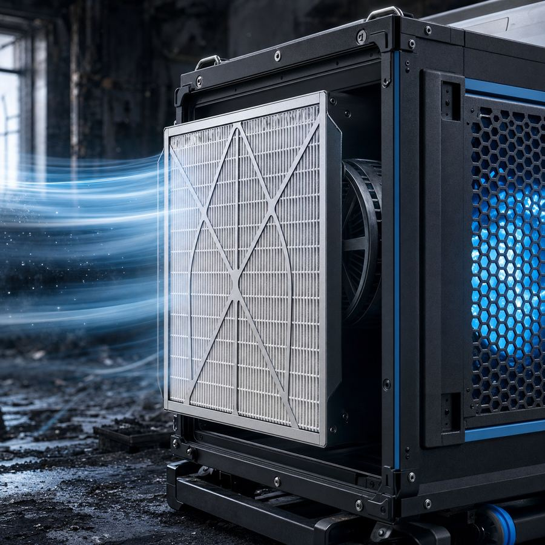

Limpieza de incendios para colegios y centros educativos en Jaen
Métodos de limpieza de incendios en Jaen
| Método | Mejor para | Ventaja Principal |
|---|---|---|
| HEPA H14 | Control de aire y partículas | Filtración total, operativo simultáneo |
| Hielo seco CO₂ | Superficies carbonizadas | Sin humedad residual, precisión |
| Ozono Industrial | Desodorización profunda | Penetración en conductos, eliminación olor |
| Fogging Térmico | Microzonas y huecos | Alcance en áreas complejas |
Empresa de limpieza de incendios y limpieza post incendio en Jaen: actuamos sobre humo, hollín, olor persistente y residuos de combustión con enfoque B2B, trazabilidad documental e informe compatible con peritación.

¿Has sufrido un incendio en Jaen? El tiempo juega en contra: durante las primeras 24-72 horas el hollín reacciona con las superficies y el olor se fija si no se interviene a tiempo. Déjanos tu teléfono y te llamamos en minutos para coordinar la visita técnica de limpieza post incendio.
Te llamamos para valorar tu incendio
Déjanos tu nombre, teléfono y población y te llamamos para valorar el siniestro y orientar los siguientes pasos.
Galaxia es la empresa de limpieza de incendios en Jaen: realizamos limpieza post incendio, descontaminación de humo y hollín, control documental y planificación orientada a que el inmueble vuelva a estar operativo cuanto antes. Es un servicio pensado para peritos, administradores de activos, responsables de mantenimiento y direcciones de operaciones que buscan una respuesta verificable y trazable, no una limpieza convencional.
El entorno de Jaen concentra actividad ligada a edificios de oficinas y escenarios de riesgo habituales en cocinas industriales. Por eso la primera inspección separa el hollín graso de las partículas secas, los residuos de combustión, el olor que persiste y la afectación a los sistemas de climatización. El desplazamiento técnico se planifica sobre una distancia operativa estimada de 368 km y se coordina con operativos municipales y provinciales de extinción cuando el siniestro lo exige.
Cuando el fuego afecta a un colegio de Jaen: lo que hay que hacer y lo que no puede esperar
Un incendio en un colegio de Jaen tiene una dimensión pública que no tiene ningún otro siniestro: afecta a los niños, preocupa a los padres y moviliza a la administración educativa de Jaen en horas.
Cuando un incendio compromete un centro educativo de Jaen, la presión sobre la dirección viene de todos lados: familias, administración, medios de comunicación locales. La empresa de limpieza que contrata debe estar a la altura de esa presión.
Desde 2005, Galaxia ha gestionado siniestros post-incendio en colegios, institutos y guarderías de Jaen y de toda Jaen. Los centros educativos tienen sus particularidades, y nosotros las conocemos. -- El mapa de riesgo de un colegio de Jaen: focos habituales de incendio
Los siniestros en colegios de Jaen responden a patrones bien conocidos que condicionan directamente la estrategia de limpieza:
Incendios eléctricos en aulas de informática o laboratorios: la concentración de equipos electrónicos en aulas específicas genera un riesgo eléctrico superior al de las aulas convencionales. Un cortocircuito fuera del horario escolar puede generar un incendio que afecte a varias aulas antes de ser detectado.
Incendios en sala de calderas o cuarto de instalaciones: los equipos de calefacción, especialmente en centros educativos de Jaen con instalaciones antiguas, son un foco de riesgo relevante en los meses de invierno. -- La seguridad de los alumnos: el criterio que lo ordena todo en un colegio de Jaen
Saneamiento y retirada de hollín en colegios y centros educativos (Jaen)
Cada intervención se ordena en cinco fases: contención de la zona, lectura de superficies, retirada del residuo carbonizado, desodorización industrial y verificación final. En todas ellas dejamos constancia de incidencias, fotografías de avance, materiales tratados y criterios de seguridad. El objetivo es bajar la carga de partículas, neutralizar olores y dejar el inmueble en un estado controlable para reparar, peritar o reabrir.
Si el siniestro afecta a colegios y centros educativos, combinamos según el caso filtración HEPA H14, aspiración controlada, limpieza con hielo seco CO₂, fogging térmico, ozono industrial y neutralización de pH sobre superficies compatibles. La técnica se decide siempre tras una prueba en zona no visible, para no arrastrar hollín ni provocar veladuras o daños secundarios.
Cómo organizamos la intervención en Jaen
En Jaen reservamos una ventana de visita de 72 h en función de los accesos, la disponibilidad de suministro, la autorización pericial y el nivel de contaminación. Damos prioridad a inmuebles con actividad económica, zonas comunes críticas, salas técnicas y espacios donde cada día de parada encarece el siniestro.
El trabajo se cierra con un resumen técnico, la relación de zonas tratadas y recomendaciones para los gremios que entran después. Cuando hay aseguradora de por medio, preparamos información lista para la gestión del siniestro: fotografías, alcance, fases ejecutadas y observaciones relevantes.
Resolvemos tus dudas sobre el incendio en Jaen
¿Se puede empezar la limpieza post incendio antes de cerrar la peritación?
Lo habitual es documentar primero el estado inicial y coordinar las autorizaciones. Galaxia organiza una visita técnica para delimitar daños sin comprometer la trazabilidad del siniestro.
¿La limpieza de incendios elimina también el olor a humo?
Sí, pero hay que combinar retirada del residuo, filtración y tratamiento molecular. Si se aplica ozono o fogging sin retirar antes la carga de hollín, el olor termina reapareciendo.
¿Retiráis también los muebles y enseres quemados?
Gestionamos la retirada y segregación de residuos de combustión. Lo que es recuperable se limpia y desodoriza; lo que no, se retira documentado para la peritación.
¿Cuánto cuesta una limpieza de incendios en Jaen?
No damos precios cerrados por teléfono: cada siniestro depende de superficie, carga de hollín, accesos y ventilación. Tras la visita técnica entregamos un presupuesto detallado.
Consulta nuestro catálogo de servicios técnicos, las preguntas frecuentes que resolvemos con peritos y administradores, o algunos de nuestros casos documentados con superficie, plazos y KPI.
Servicios relacionados
Zonas próximas a Jaen
¿Hablamos? Te llamamos en minutos
Cuéntanos qué ha pasado y dónde: coordinamos la visita técnica y los siguientes pasos del siniestro.